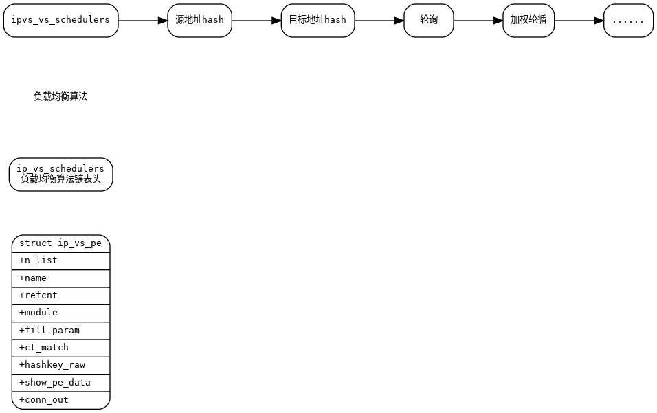
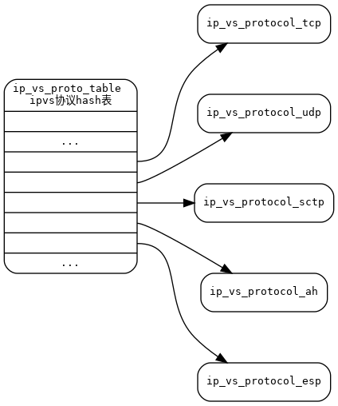

LVS(Linux Virtual Server)
//调度算法注册函数 EXPORT_SYMBOL(register_ip_vs_scheduler); //调度算法链表头 static LIST_HEAD(ip_vs_schedulers); static struct ip_vs_scheduler ip_vs_sh_scheduler = { .name = "sh", .refcnt = ATOMIC_INIT(0), .module = THIS_MODULE, .n_list = LIST_HEAD_INIT(ip_vs_sh_scheduler.n_list), .init_service = ip_vs_sh_init_svc, .done_service = ip_vs_sh_done_svc, .add_dest = ip_vs_sh_dest_changed, .del_dest = ip_vs_sh_dest_changed, .upd_dest = ip_vs_sh_dest_changed, .schedule = ip_vs_sh_schedule, }; static struct ip_vs_scheduler ip_vs_dh_scheduler = { .name = "dh", .refcnt = ATOMIC_INIT(0), .module = THIS_MODULE, .n_list = LIST_HEAD_INIT(ip_vs_dh_scheduler.n_list), .init_service = ip_vs_dh_init_svc, .done_service = ip_vs_dh_done_svc, .add_dest = ip_vs_dh_dest_changed, .del_dest = ip_vs_dh_dest_changed, .schedule = ip_vs_dh_schedule, }; static struct ip_vs_scheduler ip_vs_fo_scheduler = { .name = "fo", .refcnt = ATOMIC_INIT(0), .module = THIS_MODULE, .n_list = LIST_HEAD_INIT(ip_vs_fo_scheduler.n_list), .schedule = ip_vs_fo_schedule, }; static struct pernet_operations ip_vs_lblc_ops = { .init = __ip_vs_lblc_init, .exit = __ip_vs_lblc_exit, }; static struct pernet_operations ip_vs_lblcr_ops = { .init = __ip_vs_lblcr_init, .exit = __ip_vs_lblcr_exit, }; static struct ip_vs_scheduler ip_vs_lc_scheduler = { .name = "lc", .refcnt = ATOMIC_INIT(0), .module = THIS_MODULE, .n_list = LIST_HEAD_INIT(ip_vs_lc_scheduler.n_list), .schedule = ip_vs_lc_schedule, }; static struct ip_vs_scheduler ip_vs_wlc_scheduler = { .name = "wlc", .refcnt = ATOMIC_INIT(0), .module = THIS_MODULE, .n_list = LIST_HEAD_INIT(ip_vs_wlc_scheduler.n_list), .schedule = ip_vs_wlc_schedule, }; static struct ip_vs_scheduler ip_vs_mh_scheduler = { .name = "mh", .refcnt = ATOMIC_INIT(0), .module = THIS_MODULE, .n_list = LIST_HEAD_INIT(ip_vs_mh_scheduler.n_list), .init_service = ip_vs_mh_init_svc, .done_service = ip_vs_mh_done_svc, .add_dest = ip_vs_mh_dest_changed, .del_dest = ip_vs_mh_dest_changed, .upd_dest = ip_vs_mh_dest_changed, .schedule = ip_vs_mh_schedule, }; static struct ip_vs_scheduler ip_vs_nq_scheduler = { .name = "nq", .refcnt = ATOMIC_INIT(0), .module = THIS_MODULE, .n_list = LIST_HEAD_INIT(ip_vs_nq_scheduler.n_list), .schedule = ip_vs_nq_schedule, }; static struct ip_vs_scheduler ip_vs_ovf_scheduler = { .name = "ovf", .refcnt = ATOMIC_INIT(0), .module = THIS_MODULE, .n_list = LIST_HEAD_INIT(ip_vs_ovf_scheduler.n_list), .schedule = ip_vs_ovf_schedule, }; static struct ip_vs_scheduler ip_vs_rr_scheduler = { .name = "rr", /* name */ .refcnt = ATOMIC_INIT(0), .module = THIS_MODULE, .n_list = LIST_HEAD_INIT(ip_vs_rr_scheduler.n_list), .init_service = ip_vs_rr_init_svc, .add_dest = NULL, .del_dest = ip_vs_rr_del_dest, .schedule = ip_vs_rr_schedule, }; static struct ip_vs_scheduler ip_vs_wrr_scheduler = { .name = "wrr", .refcnt = ATOMIC_INIT(0), .module = THIS_MODULE, .n_list = LIST_HEAD_INIT(ip_vs_wrr_scheduler.n_list), .init_service = ip_vs_wrr_init_svc, .done_service = ip_vs_wrr_done_svc, .add_dest = ip_vs_wrr_dest_changed, .del_dest = ip_vs_wrr_dest_changed, .upd_dest = ip_vs_wrr_dest_changed, .schedule = ip_vs_wrr_schedule, }; static struct ip_vs_scheduler ip_vs_sed_scheduler = { .name = "sed", .refcnt = ATOMIC_INIT(0), .module = THIS_MODULE, .n_list = LIST_HEAD_INIT(ip_vs_sed_scheduler.n_list), .schedule = ip_vs_sed_schedule, }; static struct ip_vs_scheduler ip_vs_twos_scheduler = { .name = "twos", .refcnt = ATOMIC_INIT(0), .module = THIS_MODULE, .n_list = LIST_HEAD_INIT(ip_vs_twos_scheduler.n_list), .schedule = ip_vs_twos_schedule, }; register_ip_vs_scheduler(&ip_vs_dh_scheduler); register_ip_vs_scheduler(&ip_vs_fo_scheduler); register_ip_vs_scheduler(&ip_vs_lblc_scheduler); register_ip_vs_scheduler(&ip_vs_lblcr_scheduler); register_ip_vs_scheduler(&ip_vs_lc_scheduler) ; register_ip_vs_scheduler(&ip_vs_mh_scheduler); register_ip_vs_scheduler(&ip_vs_nq_scheduler); register_ip_vs_scheduler(&ip_vs_ovf_scheduler); register_ip_vs_scheduler(&ip_vs_rr_scheduler); register_ip_vs_scheduler(&ip_vs_sed_scheduler); register_ip_vs_scheduler(&ip_vs_sh_scheduler); register_ip_vs_scheduler(&ip_vs_twos_scheduler); register_ip_vs_scheduler(&ip_vs_wlc_scheduler); register_ip_vs_scheduler(&ip_vs_wrr_scheduler);

//协议注册函数 static int __used __init register_ip_vs_protocol(struct ip_vs_protocol *pp); //注册ipvs支持的协议 #ifdef CONFIG_IP_VS_PROTO_TCP REGISTER_PROTOCOL(&ip_vs_protocol_tcp); #endif #ifdef CONFIG_IP_VS_PROTO_UDP REGISTER_PROTOCOL(&ip_vs_protocol_udp); #endif #ifdef CONFIG_IP_VS_PROTO_SCTP REGISTER_PROTOCOL(&ip_vs_protocol_sctp); #endif #ifdef CONFIG_IP_VS_PROTO_AH REGISTER_PROTOCOL(&ip_vs_protocol_ah); #endif #ifdef CONFIG_IP_VS_PROTO_ESP REGISTER_PROTOCOL(&ip_vs_protocol_esp); #endif
